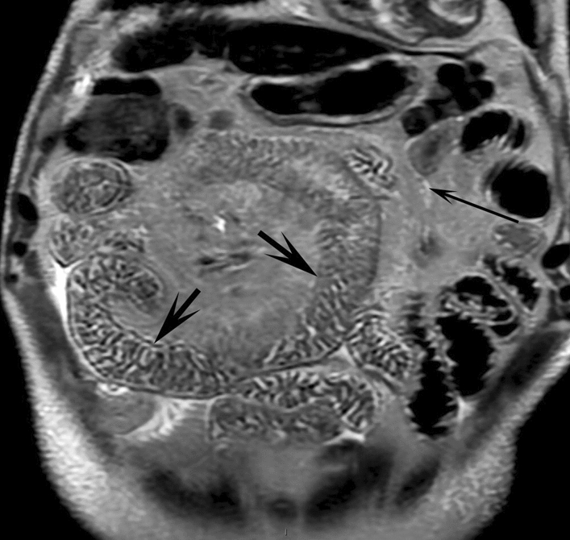
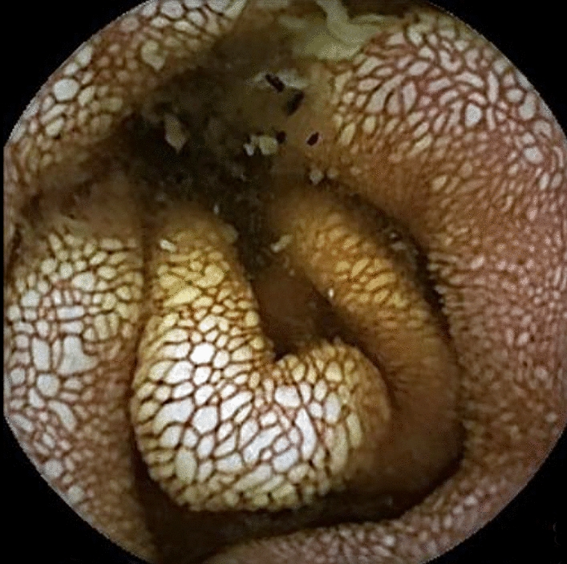
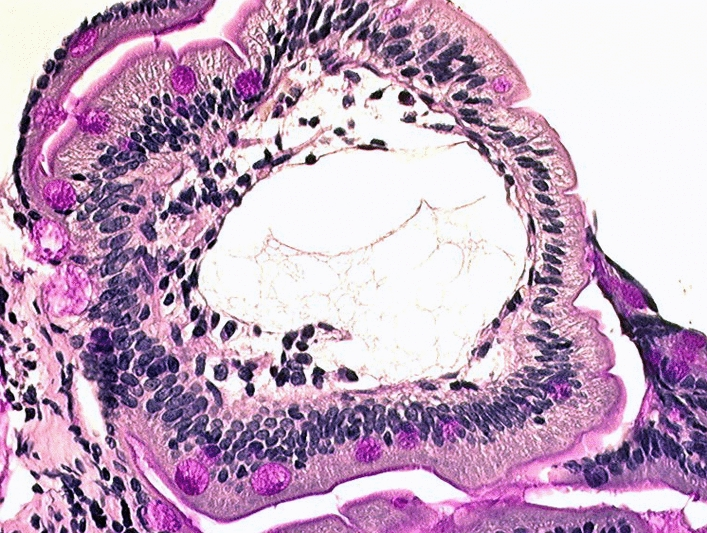

6182 — Lymphangiectasia ruột nguyên phát ở trẻ / Primary intestinal lymphangiectasia (Waldmann disease)
Tags: pattern:day-thanh-ruot pattern:phu pattern:giam-albumin pattern:giai-mach-bach-huyet pattern:phu-mac-treo vung:ruot-non vung:o-bung vung:mac-treo score:A1AT-clearance protocol:MRI-lymphography protocol:noi-soi-vien-nang protocol:CT-enterography incidentaloma:khong
Mức chắc chắn (certainty): tổng hợp y văn (literature synthesis) — dựa trên phác đồ quốc gia Pháp PNDS 2025 (Orphanet J Rare Dis 2025, PMC12247264, CC BY 4.0), đoàn hệ hồi cứu 34 trẻ (J Pediatr Gastroenterol Nutr 2026, PMC12864169, CC BY 4.0) và các ca có ảnh minh họa trong cùng bài PNDS. Nhóm không có bệnh nhân của mình; phần chưa có nguồn đủ chắc được ghi rõ "chưa rõ", không bịa. Không ghi tên tác giả — attribution dùng tạp chí + năm + PMCID.
Câu chốt: Lymphangiectasia ruột nguyên phát (PIL, bệnh Waldmann, ORPHA 90362) là rò dịch bạch huyết (chyle) vào lòng ruột vì mạch bạch huyết nhung mao giãn và tắc dẫn lưu — nên bộ ba kinh điển là giảm albumin + giảm IgG + giảm lymphocyte, chứ không phải "bệnh ruột" đơn thuần. Ba con số phải thuộc: (1) xác định mất protein qua ruột bằng độ thanh thải alpha-1 antitrypsin (A1AT): bình thường < 24 mL/24 giờ ở trẻ, < 15 mL/24 giờ ở người lớn (PMC12247264); (2) bệnh khởi phát thường trước 3 tuổi — đoàn hệ Pháp: trung vị 7 tháng (3–29,5), phù 79%, tiêu chảy mạn 50%, cổ trướng 35%, và 81% đáp ứng chế độ ăn giảm mỡ chuỗi dài nhưng chỉ 26% "khỏi" hoàn toàn (PMC12864169); (3) trên hình ảnh, MR lymphography không cản quang là chuỗi xung nhìn trực tiếp mạch bạch huyết giãn: thành ruột non dày + ổ tăng tín hiệu T2 rất mạnh trong nang bạch huyết dưới niêm mạc, còn X-quang/CT thường không đặc hiệu.
1. Tổng quan bệnh học – cơ chế hình ảnh
1.1 Vì sao mất albumin lại kéo theo mất IgG, lymphocyte và cholesterol
- Giải phẫu – sinh lý: mỗi nhung mao ruột non có mạch bạch huyết trung tâm (lacteal). Dịch trong lacteal là chyle: giàu albumin, globulin (đặc biệt IgG), lymphocyte, cholesterol và chylomicron (sản phẩm hấp thu mỡ chuỗi dài). Bình thường chyle đi hạch mạc treo → bể dưỡng chấp → ống ngực → tĩnh mạch dưới đòn trái.
- Cơ chế bệnh: khi dẫn lưu bạch huyết bị tắc hoặc loạn sản, áp lực trong lacteal tăng → giãn (lymphangiectasia) → thành mạch mỏng vỡ vào lòng ruột. Kết quả là mất protein không chọn lọc: albumin, IgG, IgA, lymphocyte, cholesterol và acid béo thiết yếu cùng ra phân.
- TẠI SAO là "bộ ba" chứ không chỉ albumin: ba thành phần này cùng nằm trong một túi dịch là chyle, nên rò chyle làm giảm cả ba. Đây là điểm phân biệt với bệnh thận mất protein: mất albumin nhưng IgG và lymphocyte thường bình thường, kèm protein niệu lượng lớn. Trong PIL, IgG giảm chủ yếu (IgG1, IgG2, IgG4); IgA và IgM cũng giảm nhưng ít hơn; có lymphopenia với tỉ lệ CD4/CD8 thấp (PMC12247264).
- TẠI SAO giảm cholesterol và thiếu vitamin tan trong mỡ: chyle mang cholesterol và vitamin A/D/E/K; rò chyle → hạ cholesterol máu, thiếu vitamin A–D–E–K, có thể hạ calci máu gây co giật, tetany, nhuyễn xương (PMC12247264).
- Vòng xoắn miễn dịch: giảm IgG + lymphopenia → nhiễm trùng tái phát (đặc biệt Cryptosporidium, CMV, nhiễm khuẩn hô hấp) → mỗi đợt nhiễm làm tăng mất protein → bệnh nặng thêm. Đây là lý do PIL được xếp vào nhóm suy giảm miễn dịch kết hợp thứ phát, dù bản chất không phải bệnh của tế bào miễn dịch.
1.2 TẠI SAO hình ảnh nhìn thấy được (vật lý chuỗi xung)
- MR lymphography không cản quang — vì sao sáng: kỹ thuật dựa trên tín hiệu T2 rất cao của dịch chuyển động chậm so với mô đặc (PMC12247264). Dùng chuỗi xung T2 rất nặng (heavily T2-weighted, 3D, echo time dài, fat-sat) thì nước tự do và chyle (T2 hàng trăm mili giây đến > 1 giây) vẫn sáng, còn mô đặc, mỡ, máu bị triệt. Vì thế:
- thành ruột non dày vì phù (nước tự do) dưới niêm mạc → dải sáng;
- mạch bạch huyết giãn trong lớp dưới niêm mạc/mạc treo → ổ tăng tín hiệu dạng nang, đa ổ, "hypersignal" nằm ngay trong thành ruột;
- mạng ống bạch huyết giãn thấy được như đường sáng nối các nang.
- Vì sao KHÔNG dùng cản quang: gadolinium không vào lòng mạch bạch huyết bằng đường tĩnh mạch, nên không thêm thông tin cho lymphangiectasia mà lại có nguy cơ ở bệnh nhân đái tháo đường/suy thận — trong khi trẻ PIL thường cần chụp lặp lại nhiều lần.
- Vì sao CT chỉ thấy "dày thành + quầng sáng": phù dưới niêm mạc tạo lớp nhược sắc kẹp giữa niêm mạc và thanh mạc ngấm thuốc = dấu quầng (halo sign) hoặc dày thành dạng nốt (PMC12247264). Nhưng dày thành ruột non lan tỏa là dấu hiệu hoàn toàn không đặc hiệu (thiếu máu, tăng áp cửa, phù toàn thân, viêm ruột, bệnh mạch máu mạc treo) → CT dùng để LOẠI TRỪ nguyên nhân khác (khối chèn ép, huyết khối tĩnh mạch cửa/mạc treo, xoắn), không dùng để chẩn đoán PIL.
- Vì sao nội soi viên nang thấy "hạt trắng": nhung mao ruột non phình lên vì lacteal đầy chyle trắng đục, nên trên hình nội soi là đốm trắng milimet, phẳng hoặc gồ, có thể hợp dòng; cho nạp mỡ (bơ, dầu ô liu) trước soi làm tăng độ nhạy vì tăng dòng chyle (PMC12247264).
- Vì sao sinh thiết tá tràng là "chuẩn vàng": mô học thấy mạch bạch huyết giãn trong nhung mao; nhuộm D2-40 (podoplanin) đánh dấu nội mô bạch huyết giúp xác nhận.
1.3 Ngưỡng định lượng nằm lòng
| Chỉ số | Ngưỡng / giá trị | Nguồn |
|---|---|---|
| Độ thanh thải A1AT | < 24 mL/24 giờ (trẻ), < 15 mL/24 giờ (người lớn) là bình thường → tăng = mất protein qua ruột | PMC12247264 |
| Tuổi khởi phát | thường < 3 tuổi; đoàn hệ Pháp: trung vị 7 tháng (3–29,5) | PMC12247264; PMC12864169 |
| Triệu chứng chính (34 trẻ) | phù 79%, tiêu chảy mạn 50%, cổ trướng 35% | PMC12864169 |
| Đáp ứng chế độ ăn giảm LCT | 25/31 = 81% (15 đáp ứng một phần, 10 hoàn toàn — albumin về > 35 g/L) | PMC12864169 |
| "Khỏi" (ăn bình thường, không tái phát) | 9/34 = 26%; 14/34 = 45% ăn lại bình thường được | PMC12864169 |
| Cần thuốc bậc 2 | 4/34 = 12% | PMC12864169 |
| Yếu tố dự báo dai dẳng | có phù bạch huyết chi hoặc có biến thể gen → đáp ứng chỉ một phần (p < 0,05) | PMC12864169 |
| Lymphoscintigraphy | chỉ thấy phóng xạ trong ruột ở < 50% ca đã chứng minh mô học → âm không loại trừ | PMC12247264 |
| Octreotide | trẻ 15–20 µg/kg × 2 lần/ngày; dạng phóng thích chậm 20–30 mg/4 tuần (người lớn) | PMC12247264 |
| Sirolimus | trẻ 0,08–0,1 mg/kg/ngày (2 lần), đích 5–15 ng/mL; người lớn khởi đầu 2 mg/ngày | PMC12247264 |
2. Mẫu hình + chẩn đoán phân biệt theo vị trí (gamut)
- Mẫu hình (pattern): dày thành ruột non lan tỏa hoặc dạng nốt + phù mạc treo + nang tăng tín hiệu T2 trong thành ruột, kèm phù mô mềm chi, cổ trướng, tràn dịch màng phổi/màng tim.
- Gamut theo vị trí:
- Tá tràng – hỗng tràng: vị trí điển hình của PIL (lacteal lớn, hấp thu mỡ mạnh) — cũng là nơi Giardia, bệnh celiac và lymphangiectasia thứ phát khu trú.
- Hồi tràng: Crohn, lao ruột, lymphoma, tăng sinh mô bạch huyết (lymphoid hyperplasia).
- Dạ dày: bệnh Ménétrier (dày nếp gấp khổng lồ, mất protein) — hiếm khi có lymphangiectasia.
- Toàn bộ ruột non + hạch mạc treo + hệ bạch huyết sau phúc mạc/ngực/chi: gợi ý bệnh hệ thống (PIL kèm dị tật bạch huyết, Hennekam, phù bạch huyết bẩm sinh).
- Gamut theo cơ chế (quan trọng hơn gamut theo vị trí):
- Tắc dẫn lưu trung tâm → lymphangiectasia thứ phát: sau phẫu thuật Fontan, viêm màng ngoài tim co thắt, huyết khối tĩnh mạch chủ trên/dưới đòn, xơ hóa sau phúc mạc sau xạ/hóa trị.
- Loạn sản/tăng sinh mạch bạch huyết nguyên phát → PIL đơn độc, Hennekam (CCBE1), RASopathy (Noonan, PTPN11/RIT1/SOS1), Turner.
- Viêm/tăng sinh niêm mạc → celiac, viêm ruột ái toan, lao ruột, Crohn, Whipple, nhiễm Giardia.
- Thâm nhiễm → lymphoma ruột non, amyloidosis, bệnh Waldenström, histiocytosis.
- Mnemonic "TẮC – LOẠN – VIÊM – U – THẤM" (5 nhóm phải loại trừ trước khi gọi "nguyên phát"): TẮC dẫn lưu trung tâm, LOẠN sản mạch bạch huyết (PIL, Hennekam, RASopathy), VIÊM niêm mạc (celiac, ái toan, lao, Whipple), U (lymphoma ruột non), THẤM (amyloid, Waldenström, histiocytosis).
3. Bảng so sánh phân biệt (ma trận đối chiếu)
| Thực thể (entity) | Hình ảnh điển hình | Chốt vào (rule-in) | Chốt loại (rule-out) | Gợi ý xác nhận |
|---|---|---|---|---|
| PIL (nguyên phát) | Thành ruột non dày lan tỏa (ưu thế hỗng tràng) + nang tăng tín hiệu T2 trong thành; phù mạc treo; không có nguyên nhân tắc trung tâm | Bộ ba giảm albumin + giảm IgG + lymphopenia, A1AT clearance tăng, không tìm được nguyên nhân thứ phát | Có huyết khối/tăng áp lực tĩnh mạch trung tâm, có bệnh tim (Fontan) → thứ phát, không phải PIL | Nội soi + sinh thiết tá tràng (D2-40); MR lymphography toàn bụng |
| PLE do tăng áp lực bạch huyết trung tâm (Fontan, viêm màng ngoài tim co thắt) | Cùng kiểu dày thành + nang bạch huyết, nhưng có dấu hiệu tim: gan to, TM chủ giãn, dày màng tim ± vôi hóa, "septal bounce" | Bệnh tim nền + tăng áp lực tĩnh mạch trung tâm; PLE xuất hiện sau mổ Fontan | Không có bệnh tim, không tăng áp lực TM → nghĩ PIL | Siêu âm tim + đo áp lực; MRI tim |
| CVID có lymphangiectasia | Dày thành ruột non ± nang bạch huyết; hạch mạc treo nhỏ, không khối | Giảm IgG đơn thuần kéo dài, đáp ứng kém với vaccine, nhiễm trùng hô hấp tái phát từ nhỏ | Có giảm lymphocyte + mất protein qua ruột rõ (A1AT tăng) → nghiêng PIL | Định lượng Ig, phân nhóm lymphocyte, đáp ứng kháng thể |
| Bệnh celiac | Dày niêm mạc tá tràng, dấu "mạch máu nổi", lồng ruột lồng ruột non; teo nhung mao | IgA antitransglutaminase dương, teo nhung mao + tăng lymphocyte nội biểu mô | MR lymphography không có nang bạch huyết dưới niêm mạc | Sinh thiết tá tràng, kháng thể |
| Viêm ruột ái toan | Dày thành ruột non từng đoạn, phù mạc treo, cổ trướng ái toan | Tăng bạch cầu ái toan máu + dịch cổ trướng, đáp ứng corticoid | Không giảm IgG/lymphocyte kiểu chyle | Sinh thiết (≥ 20 tế bào ái toan/HPF), thử corticoid |
| Lymphoma ruột non | Khối/thành dày khu trú, hạch lớn, có thể lồng ruột, mất phân lớp thành ruột | Khối khu trú + hạch > 1 cm + sụt cân, A1AT có thể tăng | Dày thành lan tỏa đối xứng, không khối → nghĩ PIL | Sinh thiết, PET-CT, nội soi |
| Lymphangioma/lymphangiectasia khu trú | Nang bạch huyết một vùng, ranh giới rõ, không lan tỏa | Tổn thương khu trú trên MR/capsule, phần còn lại bình thường | Lan tỏa toàn ruột non → PIL | Cắt đoạn/nút mạch nếu khu trú |
- Ảnh ghép đối chiếu: không tạo composite — 3 ảnh dưới đây thuộc cùng một bài tổng quan, nhưng khác bối cảnh (MR, nội soi viên nang, mô học); ghép sẽ làm mất chú giải hình gốc.
Ba dấu hiệu hình ảnh cốt lõi — đọc đúng từng cái
- MR lymphography (không cản quang): thành ruột non dày + ổ tăng tín hiệu dạng nang ("hypersignal") trong thành và mạng ống bạch huyết giãn — đây là dấu hiệu trực tiếp duy nhất của lymphangiectasia trên hình ảnh mặt cắt (PMC12247264).
- Điểm mấu chốt của "nguyên phát" không nằm ở ruột: PNDS nhấn mạnh không phân biệt được nguyên phát/thứ phát chỉ bằng hình ảnh ruột; lập luận ủng hộ PIL là phối hợp với bất thường bạch huyết ngoài ruột (sau phúc mạc, lách, ngực, chi) (PMC12247264).
- Nội soi viên nang: đốm trắng milimet, phẳng/gồ, hợp dòng; đánh giá mức lan và theo dõi khi bệnh xấu đi; ở trẻ < 6–8 tuổi phải đặt viên nang qua nội soi dạ dày vì không nuốt được.
4. Protocol chụp + hệ phân độ/điểm chuẩn hóa
4.1 Protocol
- MR lymphography không cản quang (ưu tiên số 1 khi cần đánh giá mức lan):
- FOV toàn bụng–chậu (bệnh có thể lan cả ruột non), 3D heavily T2-weighted TSE + fat-sat, lát ≤ 3 mm, không cần gadolinium.
- Kèm T1W + T2W axial bụng để đọc thành ruột, mạc treo, hạch, dịch tự do.
- Trẻ nhỏ: an thần/ngủ (PNDS nêu rõ có thể cần) — vì chuỗi xung dài và cần bất động.
- CT bụng–chậu có cản quang / CT enterography: dùng dung dịch mannitol đường uống để làm căng lòng ruột (tránh "dày thành giả" do ruột xẹp); đọc halo sign và loại trừ chèn ép, huyết khối, xoắn (PMC12247264).
- Nội soi tiêu hóa trên + sinh thiết tá tràng: chuẩn vàng; nội soi viên nang để đánh giá mức lan (nhớ nạp mỡ trước soi).
- Siêu âm tim + MRI tim khi nghi tắc dẫn lưu trung tâm (Fontan, viêm màng ngoài tim co thắt) — bắt buộc trên lý thuyết trước khi gọi "nguyên phát".
- Lymphoscintigraphy 99mTc-HSA/ASC: định vị chỗ rò và phân loại mạch bạch huyết chi (giảm sản/bất sản/loạn sản); nhưng chỉ dương ở < 50% ca PIL đã chứng minh → không dùng để loại trừ.
4.2 Phân tầng xử trí (thay cho "score" — PIL không có RADS)
flowchart TD
A["Trẻ phù + albumin thấp + giảm IgG/lymphocyte"] --> B["Đo độ thanh thải A1AT trong phân"]
B -->|Bình thường| Z["Tìm nguyên nhân phù khác: thận, gan, tim, suy dinh dưỡng"]
B -->|Tăng| C["Loại trừ nguyên nhân THỨ PHÁT: siêu âm tim, áp lực TM trung tâm, huyết khối, xơ mạc treo"]
C -->|Có nguyên nhân| D["Điều trị nguyên nhân + ăn giảm mỡ chuỗi dài"]
C -->|Không| E["MR lymphography không cản quang + nội soi viên nang: xác định mức lan"]
E --> F{"Có ổ khu trú rõ"}
F -->|Có| G["Cắt đoạn ruột hoặc nút mạch bạch huyết"]
F -->|Không, lan tỏa| H["Ăn giảm mỡ chuỗi dài + MCT + vitamin tan mỡ"]
H --> I{"Có tràn dịch thanh mạc nhiều"}
I -->|Có| J["Sirolimus 0,08–0,1 mg/kg/ngày, đích 5–15 ng/mL"]
I -->|Không| K["Octreotide 15–20 µg/kg × 2/ngày nếu thất bại chế độ ăn"]
- Chế độ ăn là điều trị gốc: giảm mạnh mỡ chuỗi dài + bổ sung MCT (MCT hấp thu trực tiếp vào tĩnh mạch cửa, không qua lacteal nên không làm tăng rò), acid béo thiết yếu + vitamin tan trong mỡ; trẻ rất nhỏ cần truyền lipid + vitamin hàng tháng.
- Sirolimus trước octreotide khi có tràn dịch thanh mạc (tác dụng kháng tạo mạch) — theo PNDS.
- Phẫu thuật/nút mạch chỉ cho thể khu trú; thể lan tỏa không cắt ruột (nguy cơ ruột ngắn).
5. Biến thể bình thường và cạm bẫy
- "Dày thành giả" do ruột xẹp: thành ruột non bình thường chỉ 1–2 mm khi lòng ruột căng, nhưng 3–5 mm khi xẹp — nguyên nhân hàng đầu của chẩn đoán dày thành sai. Luôn làm căng lòng ruột (mannitol/nước) trước khi kết luận.
- Phù mạc treo đơn thuần ("misty mesentery") + hạch nhỏ ≤ 5 mm ở người lớn tuổi/gầy là bình thường, không phải lymphoma; đừng "leo thang" chẩn đoán chỉ vì mạc treo đục.
- Lymphoscintigraphy âm không loại trừ PIL (< 50% dương) — bẫy hay gặp vì xét nghiệm "nghe rất chuyên khoa".
- Đừng chẩn đoán PIL bằng CT một mình: CT chỉ thấy phù thành ruột — dấu hiệu của hàng chục bệnh khác. Chuỗi chốt là A1AT clearance → loại trừ thứ phát → mô học.
- Cạm bẫy "bệnh gan/thận": trẻ phù + albumin thấp thường bị quy cho viêm cầu thận hoặc xơ gan; chức năng gan/thận bình thường + protein niệu âm phải nghĩ ngay tới mất protein qua ruột.
- Cạm bẫy "chỉ số vàng" (yellow nail, Hennekam): khi có phù bạch huyết chi + móng vàng + tràn dịch màng phổi, đó là hội chứng phối hợp — tiên lượng dai dẳng hơn (khớp với phát hiện "phù bạch huyết → đáp ứng một phần" của đoàn hệ Pháp).
- Elastase phân thấp trong PLE nặng: có thể thấp giả do pha loãng dịch ruột (xem 6168) — đừng chẩn đoán suy tụy ngoại tiết chỉ dựa vào elastase ở trẻ đang mất protein.
6. Tự lượng giá — Blind Quiz ngay trên trang tĩnh
Ca 1 — Bé gái 3 tuổi, phù hai chân và bụng to 2 tháng, albumin thấp, IgG thấp, lymphocyte thấp. Nhìn ảnh trước, mô tả trước.

- Gợi ý lâm sàng: bé không sốt, không protein niệu, men gan và chức năng thận bình thường, không có bệnh tim.
- Câu hỏi: Dấu hiệu chính trong ảnh? Đây là chuỗi xung gì và vì sao nang sáng? 3 chẩn đoán phân biệt? Dấu hiệu nào chốt?
Bấm để hiện đáp án (findings + chẩn đoán)
- Dấu hiệu: các quai ruột non thành dày, mô dưới niêm mạc tăng tín hiệu rất mạnh thành dải/vệt; ổ tăng tín hiệu dạng nang trong thành ruột (mũi tên ngắn) và mạng ống bạch huyết giãn (mũi tên dài).
- Chuỗi xung: MR lymphography không cản quang (T2 rất nặng, fat-sat) — chỉ dịch chuyển động chậm (chyle) còn sáng; mỡ và mô đặc bị triệt. Nang sáng vì chyle là nước tự do, T2 rất dài.
- Chẩn đoán: lymphangiectasia ruột nguyên phát (PIL) — bộ ba giảm albumin/giảm IgG/lymphopenia + A1AT clearance tăng + không có nguyên nhân tắc trung tâm.
- Phân biệt: PLE do tăng áp lực bạch huyết trung tâm (Fontan/viêm màng ngoài tim co thắt), CVID, lymphoma ruột non.
- Chốt: nội soi + sinh thiết tá tràng (mạch bạch huyết giãn trong nhung mao, D2-40 dương).
- Nguồn ảnh: Orphanet J Rare Dis 2025, PMC12247264, Fig. 3, CC BY 4.0 (nguyên bản).
Ca 2 — Bé trai 5 tuổi, tiêu chảy mạn + phù, nội soi viên nang ruột non:

- Câu hỏi: Mô tả niêm mạc? Vì sao nhung mao trắng và phù? Có cần sinh thiết không?
Bấm để hiện đáp án
- Dấu hiệu: niêm mạc hỗng tràng phù nề, nhung mao trắng, gồ lên, đốm milimet, một số chỗ hợp dòng — "hạt trắng như tuyết".
- Vì sao: lacteal giãn chứa đầy chyle trắng đục làm nhung mao căng phồng; nạp mỡ trước soi làm dấu hiệu rõ hơn.
- Vẫn cần sinh thiết: hình nội soi gợi ý mạnh nhưng không chốt; phải có mô học (và loại trừ lymphoma, lao, Whipple).
- Nguồn ảnh: Orphanet J Rare Dis 2025, PMC12247264, Fig. 2, CC BY 4.0 (nguyên bản).
Ca 3 — Trẻ 2 tuổi, phù + tiêu chảy; sinh thiết tá tràng:

- Câu hỏi: Cấu trúc nào giãn trong nhung mao? Nhuộm gì để xác nhận nội mô bạch huyết?
Bấm để hiện đáp án
- Dấu hiệu: trong trục nhung mao có khoang rỗng giãn rộng (mạch bạch huyết giãn), biểu mô phủ còn nguyên, không loét.
- Chẩn đoán: lymphangiectasia ruột — cần khớp lâm sàng (phù, albumin thấp, A1AT tăng) để gọi "nguyên phát".
- Xác nhận: D2-40/podoplanin dương tính ở nội mô mạch giãn.
- Phản biện: mô học giãn bạch huyết không phân biệt được nguyên phát với thứ phát — phải loại trừ nguyên nhân tắc trung tâm trên lâm sàng/tim.
- Nguồn ảnh: Orphanet J Rare Dis 2025, PMC12247264, Fig. 1, CC BY 4.0 (nguyên bản).
Bài liên quan chéo
- 6158 – Protein-losing enteropathy do bạch huyết ở trẻ (bộ ba phù – albumin thấp – giảm IgG; PLE sau Fontan)
- 921 – Nút mạch bạch huyết trong PLE (can thiệp khi rò khu trú)
- 1808 – Sirolimus trong dị dạng bạch huyết: theo dõi và ngừng thuốc (đích 5–15 ng/mL)
- 1762 – Hội chứng ruột ngắn ở người lớn (biến chứng nếu cắt ruột quá mức)
- 600 – Tổng quan Nhi khoa
Ảnh
- Tên file theo quy ước
6182_pil_<Modality>_<PMCID>-f<so>.jpg; nguồn + giấy phép từng ảnh ởimages/CREDITS.md. - Cả 3 ảnh đều CC BY 4.0 từ Orphanet J Rare Dis 2025 (PMC12247264), tải từ PMC CDN, nguyên bản (không crop, không đổi nhãn).
Không dùng để chẩn đoán độc lập khi chưa có người hướng dẫn.